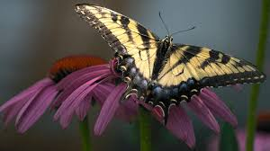
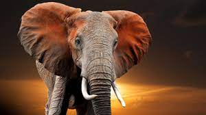

Butterflies

Butterflies are insects in the macrolepidopteran clade
Rhopalocera from the order Lepidoptera, which also includes moths.
Adult butterflies have large, often brightly coloured wings, and conspicuous, fluttering flight.
The group comprises the large superfamily Papilionoidea, which contains at least one former group,
the skippers (formerly the superfamily "Hesperioidea"), and the most recent analyses suggest
it also contains the moth-butterflies (formerly the superfamily "Hedyloidea").
Butterfly fossils date to the Paleocene, about 56 million years ago.
Monkey
 Monkey is a common name that may refer to most mammals of the infraorder Simiiformes,
also known as the simians. Traditionally, all animals in the group now known as simians are counted
as monkeys except the apes, a grouping known as paraphyletic; however in the broader sense based
on cladistics, apes (Hominoidea) are also included, making the terms monkeys and simians synonyms
in regard of their scope. Monkeys are divided into the families of New World monkeys
(Platyrrhini) and Old World monkeys (Cercopithecidae in the strict sense; Catarrhini in the
broad sense, which again includes apes).
Monkey is a common name that may refer to most mammals of the infraorder Simiiformes,
also known as the simians. Traditionally, all animals in the group now known as simians are counted
as monkeys except the apes, a grouping known as paraphyletic; however in the broader sense based
on cladistics, apes (Hominoidea) are also included, making the terms monkeys and simians synonyms
in regard of their scope. Monkeys are divided into the families of New World monkeys
(Platyrrhini) and Old World monkeys (Cercopithecidae in the strict sense; Catarrhini in the
broad sense, which again includes apes).
Tiger

The tiger (Panthera tigris) is the largest living cat species and a member of the genus Panthera.
It is most recognisable for its dark vertical stripes on orange fur with a white underside.
An apex predator, it primarily preys on ungulates such as deer and wild boar. It is territorial
and generally a solitary but social predator, requiring large contiguous areas of habitat, which
support its requirements for prey and rearing of its offspring. Tiger cubs stay with their mother
for about two years, then become independent and leave their mother's home range to establish
their own.
Elephant

- Elephants are the largest existing land animals.
- Three living species are currently recognised: the African bush elephant, the African forest elephant, and the Asian elephant.
- They are an informal grouping within the proboscidean family Elephantidae.
Dogs

- The dog or domestic dog (Canis familiaris or Canis lupus familiaris)
is a domesticated descendant of the wolf which is characterized by an upturning tail.
- The dog is derived from an ancient, extinct wolf,
and the modern wolf is the dog's nearest living relative.
- The dog was the first species to be domesticated,
by hunter–gatherers over 15,000 years ago, before the development of agriculture.
Gemini Solutions
Click here to visit website
you can also click on logo of the compnay